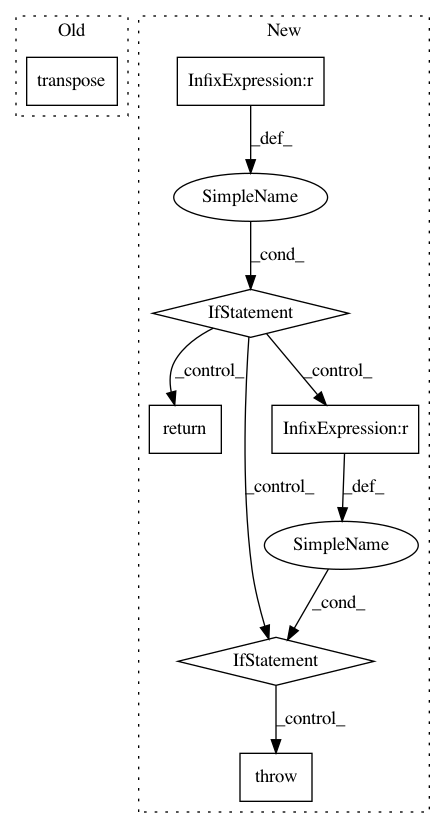

1c75176947730de8322acf6ad996096625e92e3a,tensorflow_lattice/python/lattice_layer.py,Lattice,call,#Lattice#Any#,469
Before Change
// Weights shape: (batch-size, ..., units, prod(lattice_sizes))
// Kernel shape: (prod(lattice_sizes), units)
return tf.reduce_sum(
interpolation_weights * tf.transpose(self.kernel), axis=-1)
def compute_output_shape(self, input_shape):
Standard Keras compute_output_shape() method.
After Change
// Wrap this constant into pure op since in TF 2.0 there are issues passing
// tensors into control_dependencies.
with tf.control_dependencies([tf.identity(self.lattice_sizes_tensor)]):
if self.interpolation == "simplex":
return lattice_lib.evaluate_with_simplex_interpolation(
inputs=inputs,
kernel=self.kernel,
units=self.units,
lattice_sizes=self.lattice_sizes,
clip_inputs=self.clip_inputs)
elif self.interpolation == "hypercube":
return lattice_lib.evaluate_with_hypercube_interpolation(
inputs=inputs,
kernel=self.kernel,
units=self.units,
lattice_sizes=self.lattice_sizes,
clip_inputs=self.clip_inputs)
else:
raise ValueError("Unknown interpolation type: %s" % self.interpolation)
def compute_output_shape(self, input_shape):
Standard Keras compute_output_shape() method.
if isinstance(input_shape, list):
input_shape = input_shape[0]
In pattern: SUPERPATTERN
Frequency: 3
Non-data size: 7
Instances
Project Name: tensorflow/lattice
Commit Name: 1c75176947730de8322acf6ad996096625e92e3a
Time: 2020-06-15
Author: no-reply@google.com
File Name: tensorflow_lattice/python/lattice_layer.py
Class Name: Lattice
Method Name: call
Project Name: chainer/chainercv
Commit Name: b776ae08e9e676435c5cf8d1f31a86dfd3e1897f
Time: 2018-10-20
Author: yuyuniitani@gmail.com
File Name: chainercv/utils/image/read_image.py
Class Name:
Method Name: read_image
Project Name: streamlit/streamlit
Commit Name: f3914c312fada4bfbda42caca6aaa4c9cd00d3c7
Time: 2018-01-25
Author: adrien.g.treuille@gmail.com
File Name: tiny_notebook/image_proto.py
Class Name:
Method Name: convert_to_3_color_channels